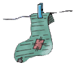
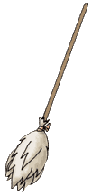

Al mercatino

Andava Fiocco di buon mattino, lesto e spedito al mercatino.
La sera prima facendo il bucato un pedalino gli si era strappato.
Un cane di rango, signore e signori, non può camminare col dito di fuori.
E quindi, presto bisogna ovviare e un altro paio s'accinge a comprare.
Guardava e sceglieva fra le bancarelle, ma i modelli son tanti
e pochini i contanti. C'è il modello imperante, quello a zampa d'elefante
ma proprio non s'addice a un pensionato vecchio, rachitico e bislacco
zitello e guarda caso anche un pochino racchio.
Ma come si racconta si narra e poi si dice
Fiocco alla fine scelse il modello a pernice
a righe rosse e nere senza le giarrettiere.
Contento e soddisfatto s'avviò quindi lesto verso la sua dimora
e prese un vicoletto in via Della Topaia.
Ma verso la Stazione, in Piazza Esposizione vide vicino un pub
e immantinente preso forse da un pò di fame
pensò di rilassarsi e fare colazione.
Il povero malnato purtroppo non s'avvide del circolo sociale
piuttosto accomodato, nero e maleodorante, fumoso e malfamato.
E fece per entrare, non l'avesse mai fatto
quando come d'incanto gli corre incontro un gatto.
Era Anselmo con la bandana, pulcioso e inetto trascinatore
fior di canaglia, fomentatore nero cialtrone
di gruppi autonomi eroe e bastione che organizzava su commissione
un sit-in di protesta una contestazione
contro il balzello sullo storione.
Fra slogan veementi a tratti indecenti si sente gridare:
“Potere gatto addosso al ratto! Vogliamo salmone pestate quel cane!"
Un rap felino da sottofondo rende il cagnetto ancora più tonto.
E Anselmo alla guida di quel Quarto Stato
circonda già il Nostro confuso, sbandato.
Fra il vecchio cane incredulo un poco allampanato
e il nostro gatto edotto nei giochi di partito
nacque un vibrato scambio d'idee che rese le menti ancora più ree.
Fu il patatrac grandioso e col botto fra dolci ricordi del sessantotto.
E i libri di scuola ne parlano ancora come di adesso come di allora.

Una pia gentildonna che gaia provenia
dalla poco distante gioiosa pescheria
pensando per il caldo ad un miraggio
mise mano alla scopa evitando un linciaggio.
Pestando alla rinfusa questo e quello
mentre intanto aspettava il bus che non passava, considerando
perplessa e stupefatta: "Ahimè! Che gioventù corrotta!!!
Sto forse diventando un poco matta?!?!"
Ma il fischio della Legge disperse il nero gregge
mentre intanto in moto s'accostava severo,
saggio e compito Ugo, paciere nato!
Bersagliere a cavallo e dopo finanziere
alle colleghe noto per zampe sul sedere.
Fra ciuffi di pelo, sgraffioni e spintoni
si accesero pure alcuni lampioni di stile barocco
che erano spenti da lustri e lustroni.
Nell'aria, lieve una dolce fragranza qualcuno giaceva col mal di panza.
Scoperto dunque Fiocco sprovvisto di scontrino
mentre gli si sequestra alfine il pedalino
si condannò l'incauto a un bagno nel catino.
"Ahimè, che pena infame” pensa innocente il cane.
E il nostro iroso Anselmo nero come la pece
alfine fu esortato ad intonare un inno in nome della pace.
E nel centro sociale già scendeva la sera
fra un rap una birra e una gattina nera a mò di baiadera.
E un cane quasi lindo e un gatto pacifista
si misero a danzare tutti sopra la pista.
Mentre Ugo approfittava, palpava ed annusava………
M.J.M
22 Dicembre 1998

Anselmo: Anselmo del centro sociale
Fiocco: Fiocco il pensionato com la minima
Guest Star: Ugo il rappresentante della legge ex bersagliere a cavallo, ex finanziere ed infine zampa lunga della stradale
La pia gentildonna di passaggio con la scopa: La signora Adelaide grande sfamatrice di randagi, nonchè madre dell'autrice in uno dei suoi giri di routine ai Mercati Generali (dove è più quello che perde che quello che trova)
e per la prima volta sullo schermo Bimba nel ruolo della baiadera.
Prodotto col patrocinio dei Beni Culturali (i lampioni barocchi) e della Regione Sicilia per le comparse.
Per alcune rime e le situazioni trattate se ne consiglia la lettura ad un pubblico…..
……tonto…..Ah!Ah!Ah!Ah! Scerzavo.